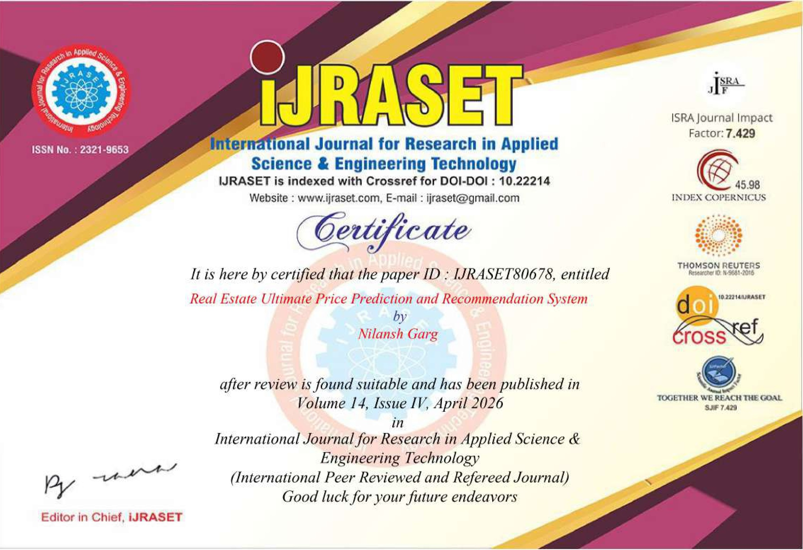

Graph Neural Networks & Production ML
I bridge the gap between neural architectures and production systems — designing scalable ML pipelines for biological, financial, and industrial challenges.
A final-year B.Tech Computer Science student at MIET Meerut, specializing in Data Science and MLOps. My work sits at the intersection of advanced deep learning and production engineering.
I specialize in Graph Neural Networks for relational and molecular data, end-to-end MLOps pipelines with DVC and MLflow, and deploying models through Flask APIs and Docker containers.
From predicting HIV inhibitory activity on molecular graphs to detecting Bitcoin fraud on blockchain networks — I build systems that are scientifically rigorous and production-ready.
Built a state-of-the-art GAT model representing molecules as graphs (atoms = nodes, bonds = edges). Multi-head attention captures spatial and chemical dependencies, significantly outperforming standard GCN models.
Scalable GNN framework on the Elliptic Bitcoin dataset — 200k+ nodes, 234k+ edges. GraphSAGE embeddings generalize to unseen transactions. F1 score: 58.24% with full MLOps reproducibility.
Production-grade VGG16 pipeline classifying kidney CT scans into 4 categories with 87.56% accuracy. Modular architecture with DVC data versioning, MLflow tracking, and Flask REST API.
Transfer learning (VGG16) diagnostic system achieving 88.67% accuracy. Full MLOps with Docker containerization and GitHub Actions CI/CD deployment to AWS EC2. Real-time Flask inference interface.
Hybrid Lasso-XGBoost ensemble for real estate valuation. Lasso performs automated feature selection; XGBoost captures non-linear regional fluctuations. Dataset: 4,000+ web-scraped listings from 92acres.com.
Peer-reviewed research bridging academic rigor and real-world applicability in AI-driven systems.

Open to internships, research collaborations, and full-time roles in ML Engineering.